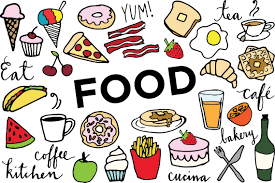

Profile

Minal Rathod
Associate Software Engineer at Xoriant
Studied in Yeshwantrao Chavan College of Engineering
ABOUT ME
I'm a kind of person who loves to experience new things. I have good communication skills, good leadership skills and love to be surrounded with people. I do not hesitate to communicate with new people as I'm friendly enough. I'm a self motivated person and believe in self learning.
My objective in life is to attain a good position in professional field where I can use my experience and knowledge to help the company or organization meet its goals. I would like to learn more and more languages. I also want to develop skills in the field of Business Intelligence.
QUALIFICATION DETAILS
| Degree/Course | College Name | Percentage/Pointer |
|---|---|---|
| SSC | Sevanand Vidyalaya Mahadula Koradi | 90.55% |
| HSC | Shivaji Science College, Congress Nagar,Nagpur | 67.17% |
| B.E | Yeshwantrao Chavan College of Engineering,Nagpur | 7.71 |
LIKES
